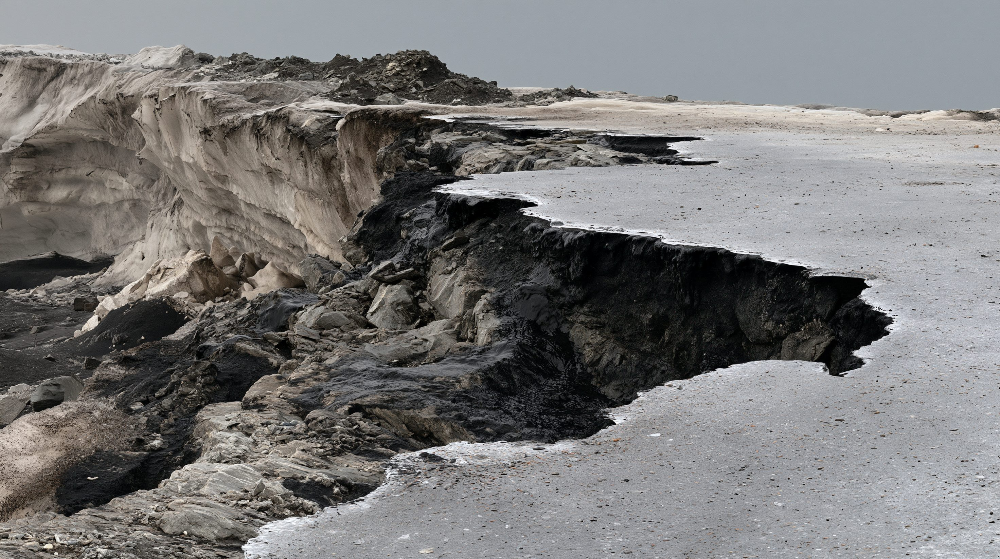
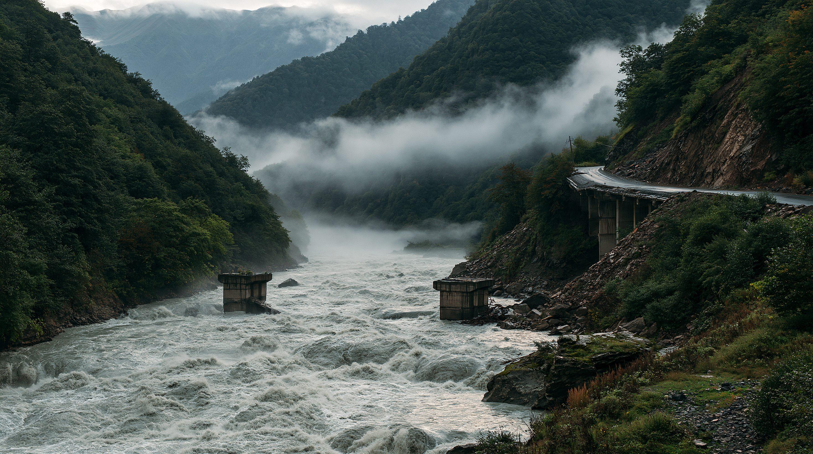
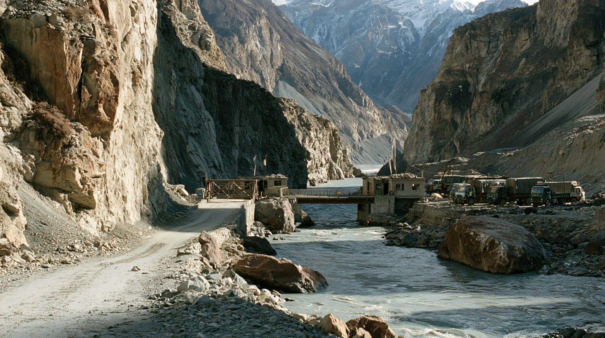
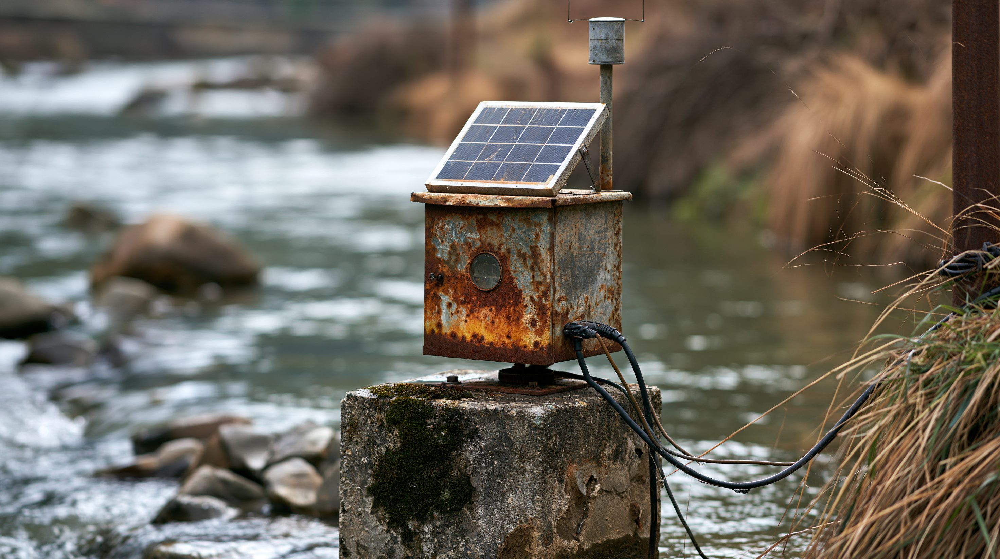

01論点 — 見張られていなかった斜面
2026年8月26日朝、ネパールと中国の国境地帯、ランタン・リルンで氷河の下の岩盤が崩壊した。氷と雪と岩が一体となって谷を落ちる氷雪岩屑なだれがレンデ川を堰き止め、まもなく決壊して、鉄砲水と土石流がトリシュリ川沿いを流れ下った。
国際総合山岳開発センター（ICIMOD）は、これが氷河湖決壊洪水（GLOF）ではないと明言している。被害はトリシュリ川沿い72キロメートルに及び、ラスワ・ヌワコット・ダーディン3郡の数十の集落を襲った。国境の向こう、中国チベット自治区側でもギロン（吉隆）の検問所が壊れ、国道216号の一部と道路・通信・電力が寸断された。
谷底への衝突は、マグニチュード5.2の地震に相当するエネルギーを解き放ち、世界各地の地震計がこれを検知した。アメリカ地質調査所（USGS）は後に、崩壊そのものが地震波を生んだと判定している。地震が先にあったわけではない。
ネパール国家災害リスク削減・管理当局（NDRRMA）は9月3日、死者1,259人、行方不明5,083人と発表した。中国チベット自治区側では死者21人、行方不明541人。行方不明者には39か国の外国人590人が含まれ、被災者は約160万人にのぼる。2015年4月の大地震以来、ネパール最悪の自然災害である。
危険な氷河湖は把握されていた。だが崩れたのは、そのどれでもない山だった。見るべき対象を、私たちは見誤っていたのではないか。

02時系列 — リストに載っていた危険と、載らなかった斜面
氷河湖の監視は年々積み重ねられてきた。崩れたのは、そのどのリストにも載っていない斜面だった。
両首脳が防災協力を含む合意を交わした。それから7年が経っても、越境する氷河ハザードに対する基本的な早期警報計画は生まれなかった。
ICIMODと国連開発計画（UNDP）が、コシ・ガンダキ・カルナリの3流域で47の潜在的に危険な氷河湖を特定した。うち42はコシ流域に集中する（国・地域別の内訳は04）。ICIMODは別途、ネパール国内だけで2,070の氷河湖を地図化し、うち21を危険と特定していた。
インド・シッキム州の南ローナク湖で、1,470万立方メートルの側堆石が崩落し、約5,000万立方メートルの水が流出した。77人が死亡し、下流のチュンタン・ダムも崩壊している。それでも死者数が比較的少なかったのは、事前の避難訓練の成果とされる。
ラスワガディの上流約36キロメートルにあった氷河上湖（氷河の表面にできた融解水の池）が決壊し、ボテコシ川が氾濫した。9人が死亡し、ネパールと中国を結ぶミテリ橋が破壊されている。今回と同じ川筋で13か月前に起きた前触れだった。
ネパール側10人、チベット自治区を含む中国側約12人の当局者がカトマンズで会合し、氷河湖の目録づくりとハザードマップの共同整備が呼びかけられた。ネパール側は、氷河の動きや水位についてより早い情報提供を求めていた。ただしこの会合は、データ共有の具体的な合意に至らないまま終わっている。
8:37に崩壊。8:50、ボテコシ川ラスワのシャブルベシ水文観測所の水位計が流失した。9:00、郡行政官が水文気象局（DHM）に通報。9:15、ラスワ・ヌワコット・ダーディン・チトワンの住民にテキスト警報が配信された——崩壊から38分後である。実際に住民の手元に届いたのは9:42、崩壊から65分後だった。地震監視センターは当初マグニチュード4.4を記録したが、周波数が地震のパターンと異なったため公開アラートを発しなかったという。
ネパール政府は9月1日までに、約6か所の水力発電事業で少なくとも933人の作業員が閉じ込められたとみられると発表し、トンネル内に取り残された作業員の捜索に重点を移した。崩落したアッパー・トリシュリのトンネルからは、約300人が救出されている。中国側では自然資源部が、ギロン港周辺で8か所の「高リスク地質災害地点」を特定し、ドローンによる監視を指示した。

035つの視点 — 同じ崩壊を、誰がどう見るか
立場によって、この崩壊から導く教訓と次の一手は異なる。
| 主体 | いま最も重視するもの | 次に打つ手 |
|---|---|---|
| ネパールの防災当局 | 警報伝達の速度と観測網の穴 | 通信・水位計の冗長化と、伝達までを含めた早期警報体制の整備 |
| 中国（チベット自治区・自然資源部） | 自国側の監視体制と情報共有の実績 | 高リスク地質災害地点8か所のドローン監視の継続 |
| インド | 自国に残る同種のリスク | 側堆石の変形監視と避難訓練の継続 |
| パキスタンとブータン | 国際資金による整備の実績 | 早期警戒システムと避難インフラの他地域への展開 |
| 科学者・ICIMOD | 観測手法の限界の周知 | 氷河湖以外のハザード（岩盤崩壊等）の目録化 |

04データ — 危険な湖の分布と、氷の将来予測
把握されていた氷河湖はどこに集中していたか。そして温暖化がこのまま進めば、ヒマラヤの氷はどれだけ失われるか。
数えられていた47の湖 — 国・地域別
コシ・ガンダキ・カルナリの3流域で特定された、潜在的に危険な氷河湖47の内訳。今回崩れたのは、この47にもネパール国内の2,070の地図にも載っていない斜面だった。
出典：UNDP／ICIMOD（コシ・ガンダキ・カルナリ流域の潜在的に危険な氷河湖に関する報告）
2100年までに失われるヒマラヤの氷 — 温暖化シナリオ別
2015年時点の体積と比べた、2100年までの損失率。ICIMODの原記述は3つのシナリオとも「1.5〜2℃で30〜50%、3℃で55〜75%、4℃で70〜80%」というレンジであるため、点推定に丸めず幅のまま示している。帯の長さが、そのまま予測の不確かさの幅にあたる。
出典：ICIMOD HI-WISE報告（2023年6月）
05深掘り — 見張る場所は、どこにあるべきだったか
災害から浮かび上がるのは、個別の失敗というより、監視の設計そのものが抱える構造的な問題である。
ヒンドゥークシュ・ヒマラヤの氷は2000年以降、融解速度が倍になった。1975年以降で最大27メートルの氷厚が失われている。ここを源とする12の河川が、16か国・20億人に水を供給している。氷河湖のリストは、これからも増えていくだろう。だが2026年8月26日の崩壊は、そのリストの外側で起きた。既存のリストを更新し続けるだけでは、次の斜面は見つからない。
